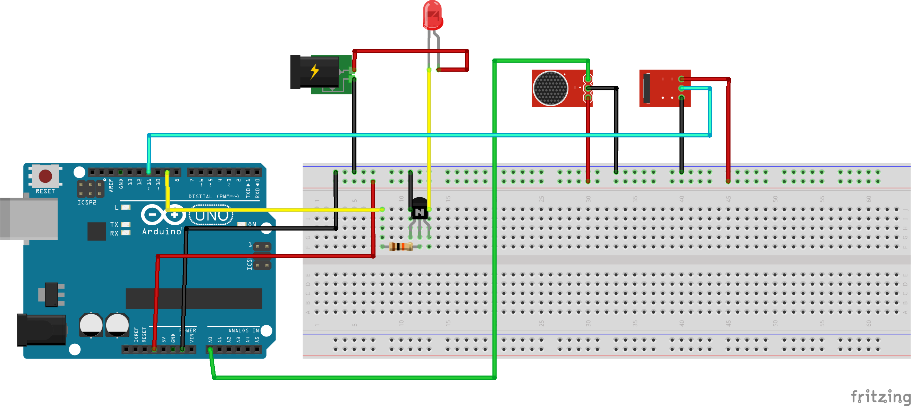
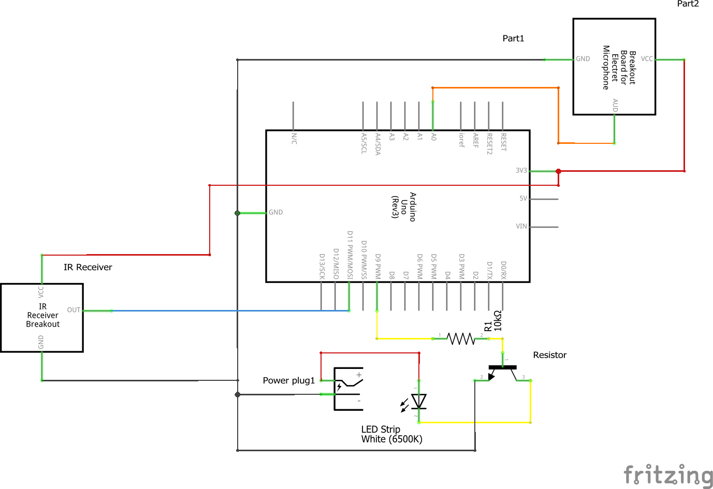

My final project is called The Hush Light. I created this product to help in situations where it is important for people to be quiet, such as when a baby is asleep. The light takes a volume input through a microphone and if the input exceeds a certain threshold the lights will turn off and remain off until the input has dropped below the threshold for two continuous seconds. The threshold can be set with a remote using an IR Reader.
Here is the circuitry:  
#include
const int sampleWindow = 50; // Sample window width in mS (50 mS = 20Hz)
unsigned int sample;
boolean quiet = true;
IRrecv irrecv(11);
decode_results results;
boolean on = false;
float threshold = 104; //the threshold for how loud it has to be to turn off the lights. Initialized to the max
void setup()
{
Serial.begin(9600);
pinMode(9,OUTPUT);
irrecv.enableIRIn();
irrecv.blink13(true);
}
double collect() {
unsigned long startMillis= millis(); // Start of sample window
unsigned int peakToPeak = 0; // peak-to-peak level
unsigned int signalMax = 0;
unsigned int signalMin = 1024;
// collect data for 50 mS
while (millis() - startMillis < sampleWindow)
{
sample = analogRead(0);
if (sample < 1024) // toss out spurious readings
{
if (sample > signalMax)
{
signalMax = sample; // save just the max levels
}
else if (sample < signalMin)
{
signalMin = sample; // save just the min levels
}
}
}
peakToPeak = signalMax - signalMin; // max - min = peak-peak amplitude
double volts = (peakToPeak * 5.0) / 1024; // convert to volts
Serial.println("reading: " + (String)(volts + 100) + ", threshold: " + threshold);
return volts + 100;
}
void adjustThreshold() {
Serial.println(results.value);
if(results.value == 16753245) {
if(!on) {
quiet = true;
digitalWrite(9, HIGH);
on = !on;
} else {
on = !on;
digitalWrite(9,LOW);
}
}
if(on) {
if(results.value == 16738455) { //0 is pressed
threshold = 100.25;
} else if(results.value == 16724175) { //1 is pressed
threshold = 100.5;
} else if(results.value == 16718055) { //2 is pressed
threshold = 101;
} else if(results.value == 16743045) { //3 is pressed
threshold = 101.5;
} else if(results.value == 16716015) { //4 is pressed
threshold = 102;
} else if(results.value == 16726215) { //5 is pressed
threshold = 102.5;
} else if(results.value == 16734885) { //6 is pressed
threshold = 103;
} else if(results.value == 16728765) { //7 is pressed
threshold = 103.5;
} else if(results.value == 16730805) { //8 is pressed
threshold = 104;
} else if(results.value == 16732845) { //9 is pressed
threshold = 1000000; //Will never turn off
}
quiet = true;
}
irrecv.resume();
}
void loop() {
if(irrecv.decode(&results)) {
adjustThreshold();
}
if(on) {
if(collect()>threshold) {
quiet = false;
}
int count = 0;
while(!quiet) {
if(irrecv.decode(&results)) {
adjustThreshold();
}
digitalWrite(9,LOW);
if(collect()>threshold) {
break;
} else if (count >= 40){
quiet = true;
} else {
count++;
}
}
if(quiet) {
digitalWrite(9, HIGH);
}
}
}